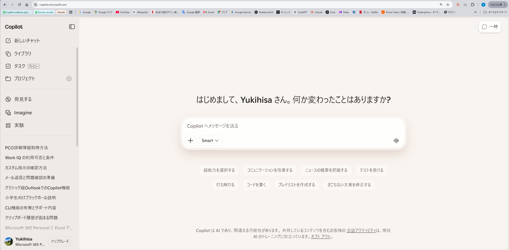
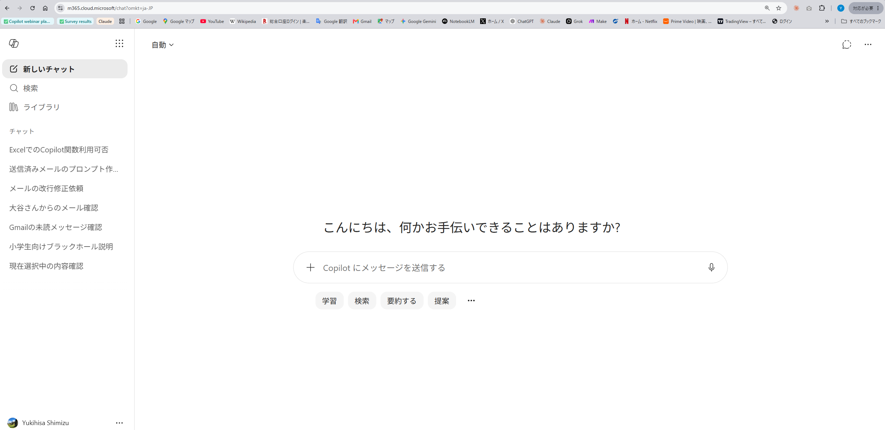

3回シリーズ無料Webセミナー 第1回 ／ 2026年7月12日（日）21:00〜21:40
Copilotは「別物」になった
——まず触る・モードを使い分ける
去年「使えない」と感じたCopilot、実は「重い作業なのに“速い”モードのまま」だったかもしれません。
今夜、その違いを一緒に確かめます。
清水 幸久（Yukisa）AI・ITよろず相談所
Google Meet 参加無料 各回40分
Today's Goal
今日「速い／じっくりの使い分け」が分かれば成功
01
Copilotの“種類”が整理できる
無料版・会社版・GitHub版は別物。「繋がるデータが違う」だけと分かります。
02
速い／じっくりを選べる
重い作業ほど「じっくり」に切り替える。モデル名は覚えなくてOKです。
03
今日から使える時短が1つ増える
議事録・長いメールなど、明日すぐ試せる場面を持ち帰ります。
環境確認コーナー
チャット欄の「自動」の横に、
何が表示されていますか？
何が表示されていますか？
CHATに投げかけ
「モード選択に何が出ますか？ わかった方はチャットで教えてください」
安心してください。事前アンケートでも「見たことがない・わからない」が最多でした。あなただけではありません。
Copilotの“種類”ミニ地図
無料版・会社版・GitHub版は別物です
これから4つの画面を見比べます。まずは全体の地図から。
| 名称 | 繋がるデータ | 今日の扱い |
|---|---|---|
| Copilot（無料・Web/Windows標準） | Web情報のみ | 「がっかり体験」の発生源。対比用 |
| Microsoft 365 Copilot（会社版） | 社内データ連携・商用保護 | 今日から3回の主役 |
| 個人版 Microsoft 365 のCopilot | 社内連携なし | 講師デモ・対比用（今日はこれで実演） |
| GitHub Copilot | コード | 対象外（開発者向けの別物） |
判断軸はひとつだけ：「繋がるデータが違う」——それだけで整理できます。
画面比較 1/4
無料版Copilot——Web情報だけに繋がる

assets/copilot_web_free.png が見つかりません
講師の実画面（copilot.microsoft.com）——無料版と同じ入口・同じ画面
入口＝copilot.microsoft.com／Windowsのタスクバー
繋がるのはWeb情報のみ
「一度使ってがっかり」の多くはコレ（会社版と別物）
画面比較 2/4
会社版 Microsoft 365 Copilot——社内データに繋がる

画像はオンライン時に表示されます
（出典：microsoft.com）
（出典：microsoft.com）
出典：microsoft.com（Microsoft 365 Copilot エンタープライズ公式ページ）
入口＝Teams／Officeアプリ内／microsoft365.com
メール・会議・ファイルなど社内データ＋商用データ保護
画面に組織アカウントが表示される
表示はテナント設定で異なります。ご自分の画面でご確認を
画面比較 3/4・4/4
個人版M365のCopilotと、GitHub Copilot

assets/m365_chat_personal.png が見つかりません
講師の実画面（m365.cloud.microsoft）——左上に「自動」モードセレクタ
Officeアプリで使えるが社内データには繋がらない＝講師のデモ環境

画像はオンライン時に表示されます
（出典：github.com/features/copilot）
（出典：github.com/features/copilot）
GitHub Copilot（VS Code）実画面
コードを書く開発者向けの別物。今日は対象外
全3回の地図
今日はここ——3回で登り切ります
今日はここ
第1回 7/12（今日）
まず触る・モードを使い分ける
1質問する
2モードを選ぶ今日の主役
→
第2回 7/19
数字と文書が片付く（Excel・Word）
1〜2段目を実務で深掘り
→
第3回 7/26
作る・任せる
3自分のツールを作る
4任せる
Copilot活用の4段（質問する→モードを選ぶ→作る→任せる）を、3回で順番に登ります。
今日の主役
重い作業ほど「じっくり」に切り替える
速い（Quick）
定型的な一問一答
すぐ返事がほしい
複雑な分析・多段整理は浅くなりがち
→
じっくり（Think Deeper）
議事録・長文の構造化
複雑な分析・多段階の整理
段階的に検証しながら答えてくれる
①新人・叩き台AIは優秀な新人。出力はたたき台と心得る
②モードの使い分け回答が薄いと感じたら「じっくり」への合図
③ハルシネーションもっともらしい嘘もある。最終確認は人間
ONE STEP DEEPER一段深く
“じっくり”の正体と、チャットの捨てどき
気づき 1
じっくりモードは“考える時間”を買っている
Think Deeperは、回答を出す前により多くの推論（検討ステップ）を走らせる仕組みです。「重い作業ほどじっくりに切り替える」は精神論ではなく、この仕組み上の原理から来ています。
気づき 2
会話が長くなるほどAIは劣化する → チャットは使い捨てる
AIが一度に覚えていられる量（コンテキスト）には上限があります。長い会話の後半で回答が崩れてきたら、話題ごとに新しいチャットを開くのが中級の運用です。「会話を育てる」より「会話を捨てる」。
詳しくは講師のNote記事：note.com/yukisa0814/n/nfaf4a816c485
詳しくは講師のNote記事：note.com/yukisa0814/n/nfaf4a816c485
ライブデモ
目玉：同じ議事メモで
“清書” と “検算付き”を見比べる
“清書” と “検算付き”を見比べる
見どころ：軽い頼み方は“速い”で十分。重い頼み方（検算・矛盾チェック）は“じっくり”に切り替えて頼む——出力が別物になります
正直にお伝えすると、個人版で「自動」横のモード切替が出ない場合は、事前取得した2種類の出力を貼ってご覧いただきます
会社版だとこうなる
Teams会議は「自動」で要約される
会社版Copilotなら、会議の録音から自動で議事録の下書きが作られます。今日は原理を、手元の議事メモで生実演します。
公式画面

画像はオンライン時に表示されます
（出典：support.microsoft.com）
（出典：support.microsoft.com）
出典：support.microsoft.com「Microsoft Teamsの要約」
ONE STEP DEEPER一段深く
議事録は「読む」から「尋ねる」へ
会議後、Recap（要約）画面のCopilotへ「私のTODOは？」「◯◯について何が決まった？」と後から質問できます。要約文を読むより速いことも多い運用です。
出典：support.microsoft.com「Microsoft Teamsの要約」
ライブデモ
まず「速い」のまま頼んでみます
見どころ：まず“軽い頼み方”（清書だけ）を速いモードで。今のCopilotはこれだけで綺麗な議事録を出します——それ自体が“別物になった”証拠です
種明かしすると、このメモには罠が3つ——①値引き上限456万円＞先方希望450万円 ②担当者が休暇中なのに“来週中”の宿題 ③名刺112枚＞割り振り上限100件。清書だけ頼んだ出力は、これを素通りします
比較の結果
同じメモ・同じ指示でこれだけ変わる
速い × 軽い頼み方（清書）
- 決定事項・宿題・期限が綺麗に整う——日常の要約はこれで十分
- 「5%まで可」「来週中に確認」をそのまま転記
- 罠は素通り（清書しか頼んでいないから）
じっくり × 重い頼み方（検算込み）
- 456万円＞先方希望450万円を計算して指摘
- 窓口休暇と期限の矛盾を指摘し、対応案まで添える
- 112枚＞100件のあふれを指摘
コピペできるプロンプトの型
議事録はこの3構造で頼む
「以下は〇〇の会議メモ／決定事項・宿題・期限の順で／【データ】」——この順番を守るだけで精度が上がります。
PROMPT TEMPLATE
以下は〇〇の会議のメモです。決定事項・宿題・期限の順でまとめてください。
そのまま実行すると問題になりそうな点があれば指摘してください。
【データ】
（ここに議事メモを貼り付け）
※検算の一行を足すのが“重い頼み方”。重い依頼は、考える時間を確保する“じっくり”とセットで
ライブデモ
長い取引先メールを3行に要約
見どころ：依頼・条件・期限が本文に埋もれた長文メールが、3行で頭に入る形に変わります
正直にお伝えすると、要約が長すぎたら「もっと短く」と戻せばOKです
Outlook：全員に当たる地味な時短
長いメールを3行要約で読む
STEP 01
長文メールをCopilotに渡す
Outlook上でメールを開き、Copilotボタンから要約を依頼
STEP 02
「3行で要約して」と頼む
AIへの投げかけ：
「このメールを3行で要約してください。依頼内容・条件・期限がわかるように」
STEP 03
要点だけ先に把握できる
本文を読まなくても、返信すべきかがすぐ判断できる状態に
ONE STEP DEEPER一段深く
要約の一歩先
長いスレッドには「このスレッドから私宛の依頼と期限だけ箇条書きで」と頼んでみてください。全文要約より、実務ではこちらの方が効きます。
背骨④：使えるプロンプト集
議事録とメールは、この型のコピペで戦える
議事録
基本の型まず清書
以下は〇〇の会議のメモです。
決定事項・宿題（担当者ごとに、期限は具体的な日付に直す）の順でまとめてください。
【データ】
決定事項・宿題（担当者ごとに、期限は具体的な日付に直す）の順でまとめてください。
【データ】
重い頼み方の一行検算まで頼むなら＋じっくり
そのまま実行すると問題になりそうな点があれば指摘してください。
メール
3行要約長文メール
このメールを3行で要約してください。依頼内容・条件・期限がわかるように
【データ】
【データ】
スレッド向け長いやり取り
私宛の依頼と期限だけ、箇条書きで教えてください
戻し方仕上がり調整
「もっと短く、1行で」／「もう少し詳しく、条件面の数字も」
背骨⑤：セキュリティ
入れていいデータは会社のルールに従う
個人情報・機密情報
顧客情報や未公開の数字は、まず自社のAI利用ルールを確認してから入力を。
迷ったら聞く
「この資料は入れていいか」を情シスや上長に確認する習慣が安全です。
小Q&Aコーナー：ここまでで気になったことをチャットに書き込んでください。時間の許す範囲でお答えします。
今日の5つの持ち帰り
明日から使える5つ
01
Copilotの種類は「繋がるデータが違う」だけで整理できる
02
重い作業ほど「じっくり」に切り替える
03
議事録は「決定事項・宿題・期限」の順で頼む
04
長いメールは「3行で要約して」だけで時短になる
05
AIの出力は「叩き台」。最終確認は人間が行う
到達宣言・回収
「速い／じっくりの使い分け」——
今日、分かりましたか？
今日、分かりましたか？
去年『使えない』と感じたCopilotは、モードを使い分ければ“別物”になります。覚えるのは、これだけです。
Next Session
次回予告
最後にお願い
アンケートご記入のお願い
（1〜2分）
（1〜2分）
ご協力のお願い
本日の資料・録画はアンケート回答者にお送りします
所要時間は1〜2分です
URLはチャットに貼ります
https://forms.gle/f3rqP3BwEqQzu9qF7

スマホからはこちら
ご質問・ご相談は Web / Note / X からいつでもどうぞ。第3回まで無料でご参加いただけます。
正直にお伝えすると
講師の手元は個人版です
私の手元は個人版で、できることに限りがあります。でも皆さんの会社版は社内データに繋がる上位版。今日はその引き出し方を一緒に開けます。
「あなたは持っている」とは言い切りません。「持っている“はず”なので、まず確認しましょう」——それが今日のスタンスです。
ご相談・お問い合わせ
今日はありがとうございました
Web
yorozusoudansyo.github.io/home/
無料相談ボタンからどうぞ
無料相談ボタンからどうぞ
Note
note.com/yukisa0814
AI活用マガジン連載中
AI活用マガジン連載中
X
@Yorozu0519
最新情報・小ネタを発信中
最新情報・小ネタを発信中
次回
第2回 7月19日（日）21:00〜
お待ちしています
お待ちしています